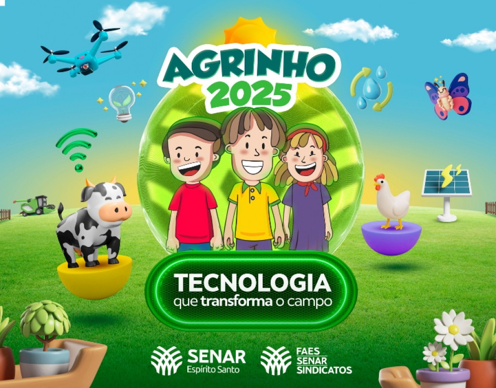
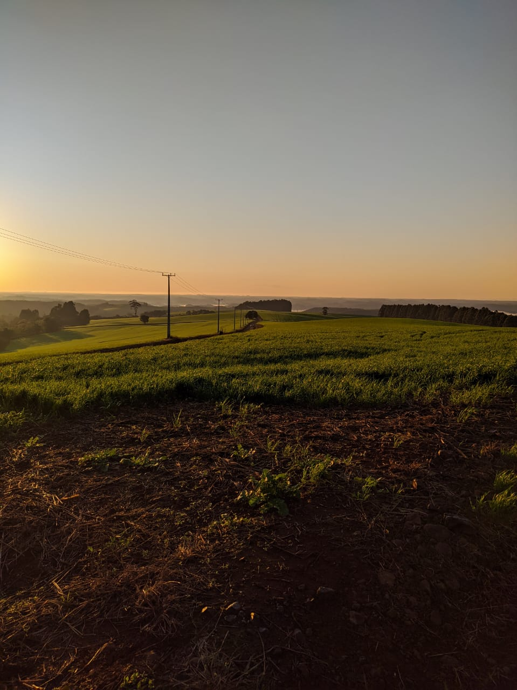
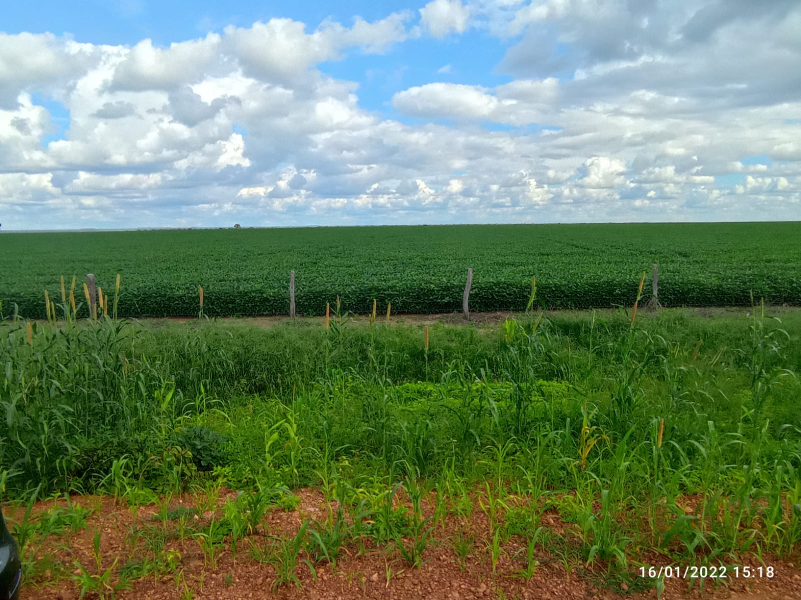
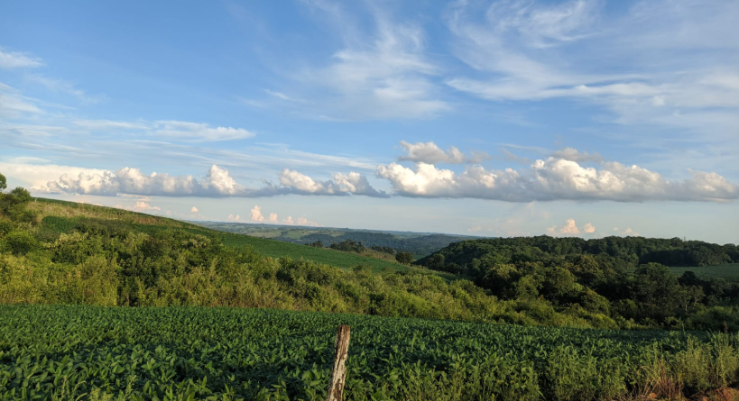

Descobrindo o AGRINHO PARANÁ

========Campo e Cidade========
A Essência da Zona Rural

Área Rural - Campo.

A Essência das Áreas Urbanas

A grande extensão Rural
O começo de tudo.

As belas vistas do campo
Um lugar ótimo para.

A urbanização das cidades
Os centros dos auxílios de necessidades.